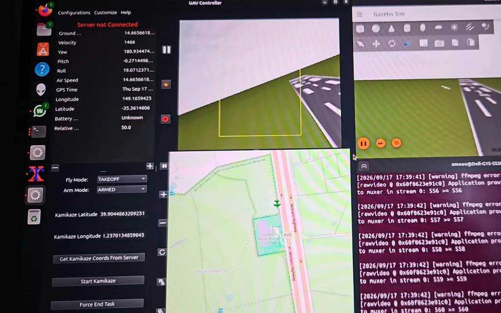

SihaInterface
Python, PySide6 (Qt Widgets and QML), pymavlink
The ARES team’s ground station for competition flights: a MAVLink link to ArduPilot or PX4, a map with the other aircraft, no-fly zones, geofence and mission, the camera with QR detection, and a live link to the competition server.
What I built:
- Guidance for the autonomous dive onto a QR-code target, a state machine flown in guided mode that restores the normal flight envelope after every run.
- QR detection with OpenCV and zxing-cpp / pyzbar that falls back through contrast, sharpening, upscaling and deblur stages.
- Since August 2026, an independent continuation: parameter tables, simulator connection and an evaluation-video recorder.
Created and mostly written by Muzaffer Kadir Belen. Route preplanner by Yusuf İslam İnan.